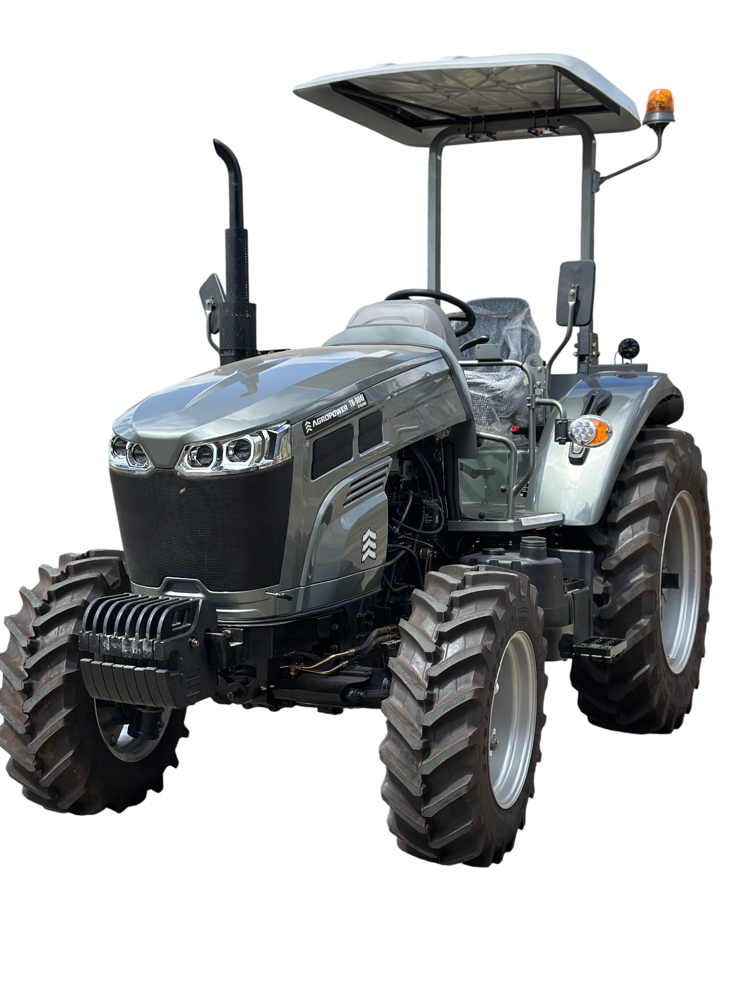

Edición Lujo
Tractor Agropower con Cabina 130 HP
Rendimiento superior para labores pesadas. Motor turbo-diésel de última generación y máximo confort para largas jornadas.
Solicitar CotizaciónDistribuidor oficial de maquinaria de alto rendimiento. Diseñados para la excelencia, construidos para durar.
Explorar Catálogo
Rendimiento superior para labores pesadas. Motor turbo-diésel de última generación y máximo confort para largas jornadas.
Solicitar Cotización
La definición de polivalencia. Perfecta maniobrabilidad y eficiencia para cultivos mixtos en espacios reducidos y en todos los necesarios.
Solicitar Cotización.png)
Fuerza bruta para el trabajo pesado a cielo abierto. Diseñado para maximizar la productividad en grandes extensiones y ideal para cargas pesadas.
Solicitar Cotización
Agilidad y eficiencia en formato compacto. La solución ideal para medianas fincas y labores de mantenimiento preventivo en el campo agricola.
Solicitar Cotización